The idea list
The running list
The running collection, gathered from meetings, walks, and a long note thread. Collecting is the point right now; editing comes later, with the design team. Each idea carries its why, because the why survives even when the specific idea gets replaced by a better one.
Body
Wellness and comfort
- A full gym with sauna, cold plunge, contrast therapy, and real showers. The team's most-requested item, by a wide margin. Why: the team runs the trail at noon in desert heat and the current campus has one shower. Nobody should need an outside membership for a habit the company loves.
- Bathrooms well past office standard: fully enclosed floor-to-ceiling stalls, bidets, possibly hand washing in the stall. Why: bathroom quality signals how the building treats people.
- Individual climate control in every office and room. Why: today's glass rooms overheat and nobody can fix their own room. It is the most repeated complaint in the current offices.
- No shades as the default. Solve glare with orientation, facade depth, and glazing; shade a room only when it must go dark on purpose. Why: the view is the point of the site, and a pulled shade deletes it.
- Heaters and misters outdoors. Why: the misters already piloted in the container park stretched the outdoor season; the decks should work more months than the weather offers by default.
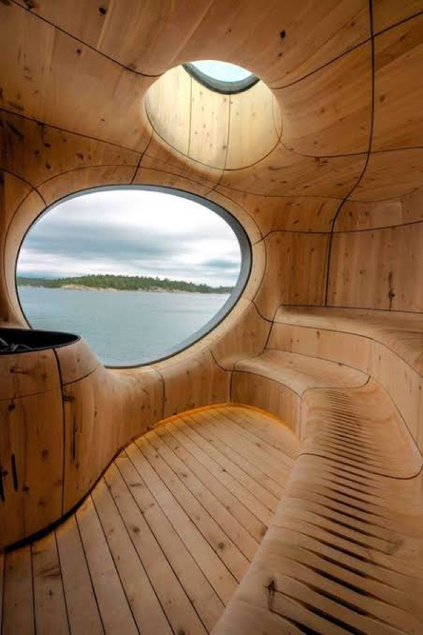
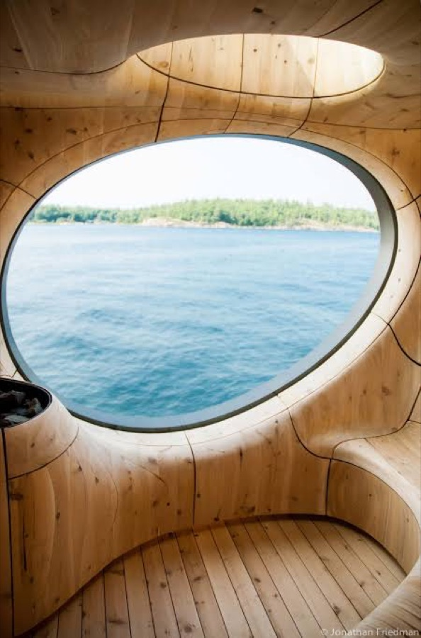
Work
Working outdoors and indoors
- Offices that convert to outdoor offices: a retractable wall, the whole desk effectively outside on a summer morning. Why: sitting outside with a laptop already happens daily; the idea is to stop it being a compromise.
- Automated building behavior: lighting, doors, and windows on sensors and schedules, walls that open themselves to the dawn air. Why: the container offices proved that manual friction means features go unused.
- Operable windows. Why: viable in this climate, and for an owner-occupier the energy payback pencils in about seven years.
- A room that fits the whole company. Why: all-hands meetings currently do not fit anywhere. One collected pattern: interior stadium stairs that double as all-hands seating over a commons floor, so the room works every day and becomes the auditorium when everyone gathers.
- Meeting rooms sized generously. Why: container width has capped every meeting room for years.
- Every office holds a four-person meeting. No office so small that a conversation has to move somewhere else. Why: half the meetings that matter start as two people stepping into a third person's office; an office that seats four keeps the conversation where it started.
- A real library. Not a quiet corner with a bookshelf: a room that promises silence, holds the trade reference collection, and gives the broker-exam studiers a place built for the habit. Dozens of people across every department are studying for an exam with a pass rate near 12 percent; the library is where the company's trade depth gets built. It pairs naturally with the print culture: bound regulations, printed rulings, big flat tables for spreading them out. Why: a company whose moat is people who understand trade should have the room that says so.
- A large-format architectural plotter and walls that hold printed work. Why: the team thinks on paper and walls, not only screens.
- E-ink frames for ambient information. Why: calm displays fit a building that should not glow like a command center.
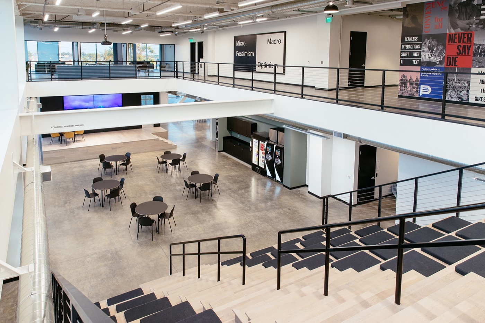
Story
Identity and experience
- Cipher-shaped handles on the main doors. Why: the first physical touch of the building can carry the mark.
- Country rooms, maybe country floors. Why: covered on the Culture page; the world is the product.
- A bronze globe as the landmark object. Why: covered on the Character page.
- An alternate-universe room, in the spirit of Omega Mart. Why: surprise is a Zonos trait, and one door that opens somewhere impossible says it better than a slogan.
- A lobby that tells the story of what it belongs to, in the spirit of the Empire State lobby mural. Why: the story of trade, the desert, and the team deserves a permanent telling.
Community
The ground floor and the community
- A reward at the top of the stairs: coffee, shade, water. Why: hundreds of people a week finish a climb at the property corner; the top of the climb should feel like arriving somewhere.
- An annual community sunrise on the east decks. Why: the sunrise is already the site's daily event; sharing it once a year costs little and says a lot.
- Daycare on the bottom floor, run with a partner. I really like this one, and the team has asked for it. An operator runs it; Zonos provides the space and subsidizes it. The ambition runs past daycare toward a learning center. Why: the team is young families and the ridge is filling with housing; no company our size offers childcare, so it becomes part of every recruiting conversation; and federal law gives a 50 percent tax credit on qualified childcare spending, up to $600,000 a year.
- Ground-floor food and retail, roughly a third of a floor. Why: stair traffic and coming residents can support it, and it keeps the street side alive after hours.
- A kitchen built for full-blown cooking. Day to day: daily lunch from local restaurants, better tools for heating what people bring from home (the team asked for a bigger toaster oven and an air fryer), room for events, visiting merchants, maybe breakfast. The build spec goes further: a full commercial kitchen, so if we ever want a chef the building already supports one. Why: feeding people together is the cheapest culture program there is, and kitchens are expensive to retrofit.
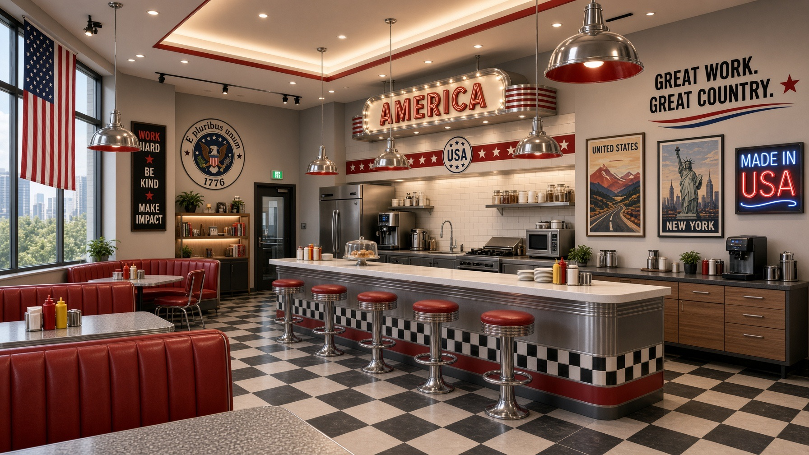
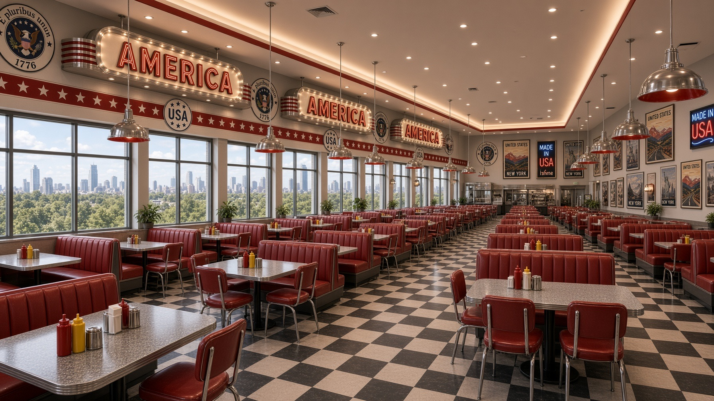
From the team
What the team is asking for
Collected from Slack, in the team's own asks. Some of these I want as much as they do; some are theirs more than mine; all of them stay on the table.
- Growing things you can eat. A rooftop garden or indoor greenhouse with produce people can pick. Edible landscaping: pomegranate and fig trees, small seasonal herb and vegetable beds, maybe peaches or apricots. A butterfly and pollinator garden outdoors. I am not sure I want plants you can eat from; the team clearly does, and the desert makes it a real design question rather than a planter box.
- Green rooms to work in. A quaint atrium, plant walls, or jungle rooms with hammock seating: places that feel nothing like the open floor for the hours that need it.
- Pergolas and fire outside. Outdoor pergolas and seating with misters, fans, and gas fire pits, extending the deck season in both directions. This one is already half-proven by the misters piloted in the container park.
- An executive briefing room that earns its keep. Broadcast-grade lighting and acoustics for customer visits, and the rest of the time it is the podcast and webinar studio. The stat the team cites: about three quarters of customers who go through a briefing center grow the deal, by roughly a third on average. It also pairs naturally with the external AI room on the How we work page.
- Oxygenate the building. Ventilation as a performance feature, not a code checkbox. The Harvard COGfx study measured cognitive scores roughly doubling at 600 parts per million of carbon dioxide and 40 cubic feet per minute of fresh air per person, against a conventional office. The team has felt the opposite condition in the current rooms; the new building should be the study's good case.
Outdoors, starting now
The courtyard concepts
The outdoor thinking does not wait for the new building. A design study from August 2026 explores the open courtyard north of the current buildings: a 60-foot diameter circular cipher as the organizing center, with twelve directions for the break area around it. The study renders the cipher as a paver field, and pavers are one option among many; nothing here is chosen. The direction I keep coming back to is an inset: the cipher sunk into the ground like a fire pit, with steps down, so you walk into the mark rather than across it. The campus should tell a story as you move through it.
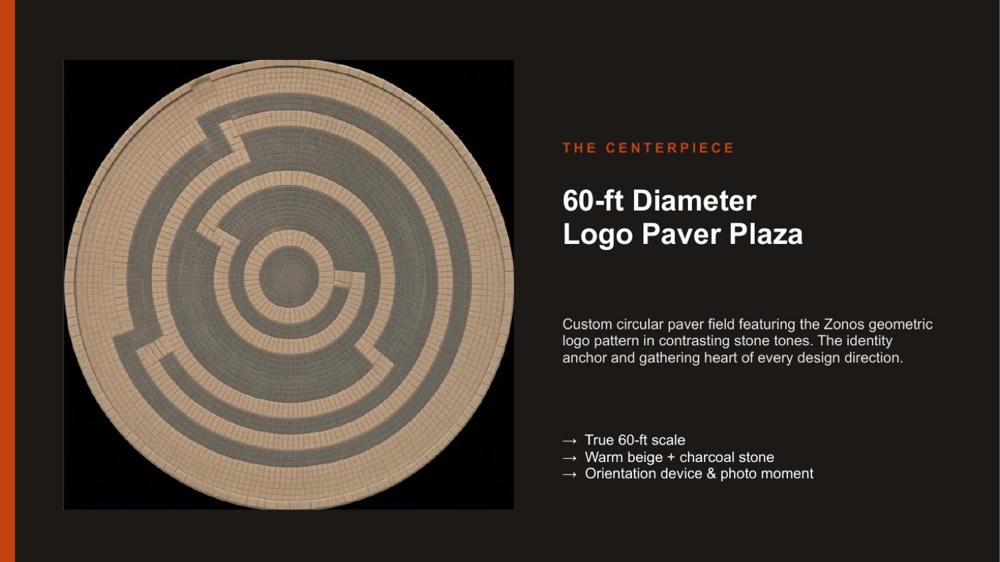
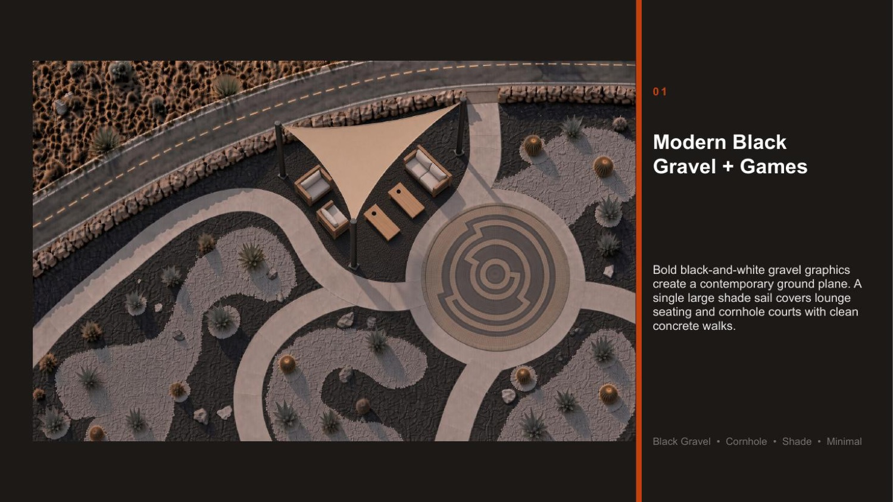
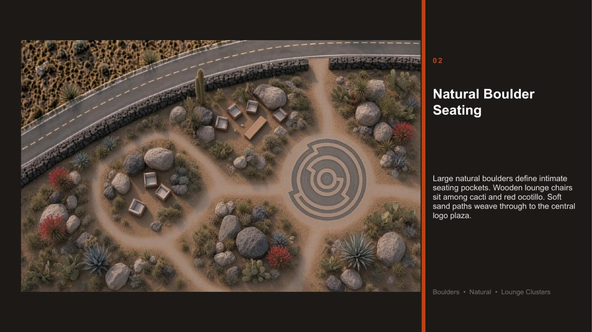
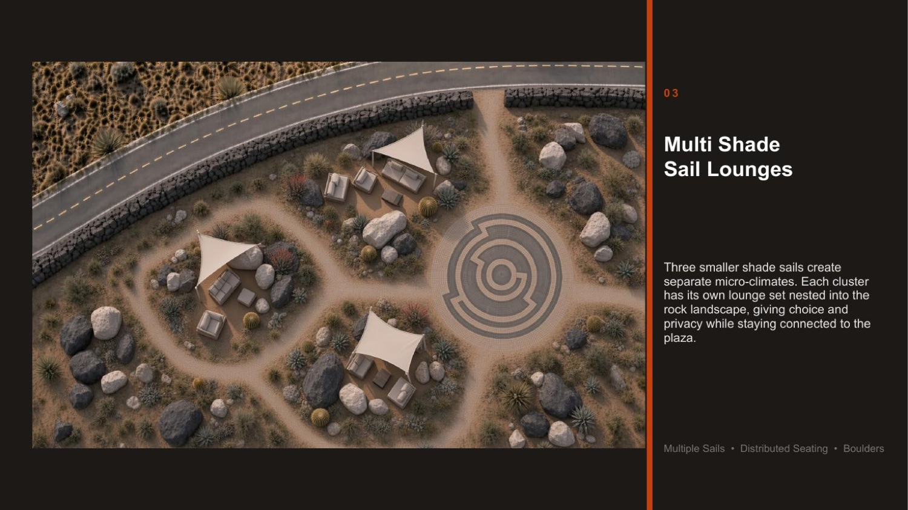
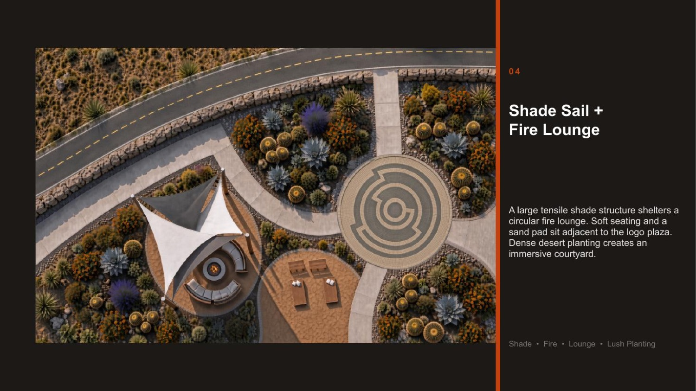
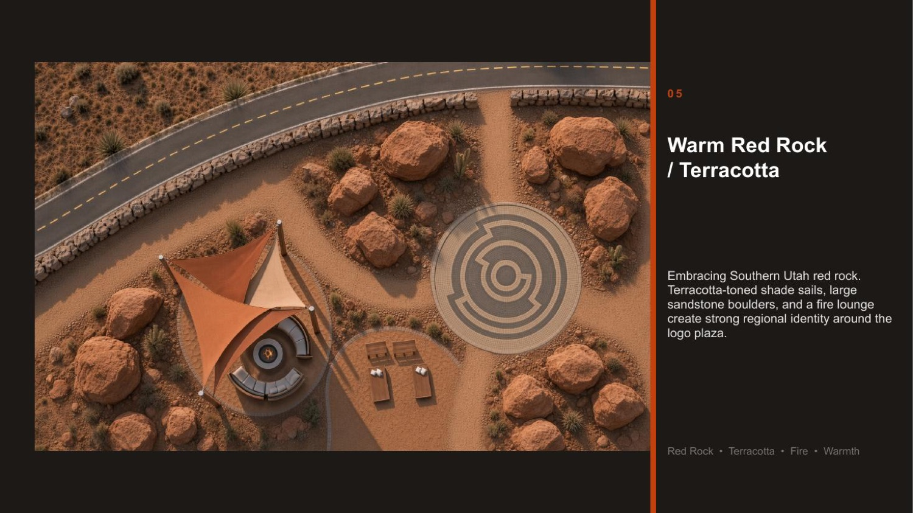
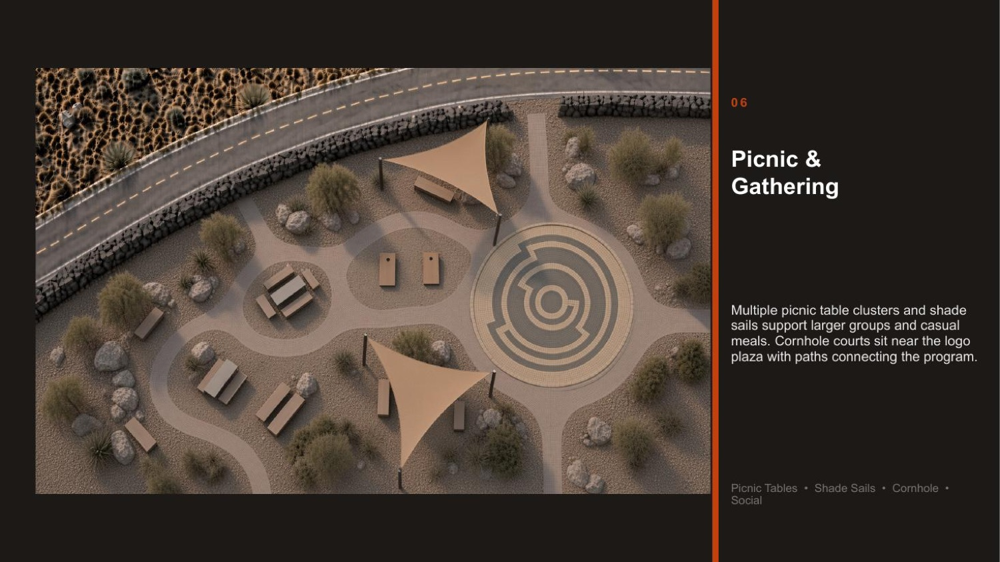
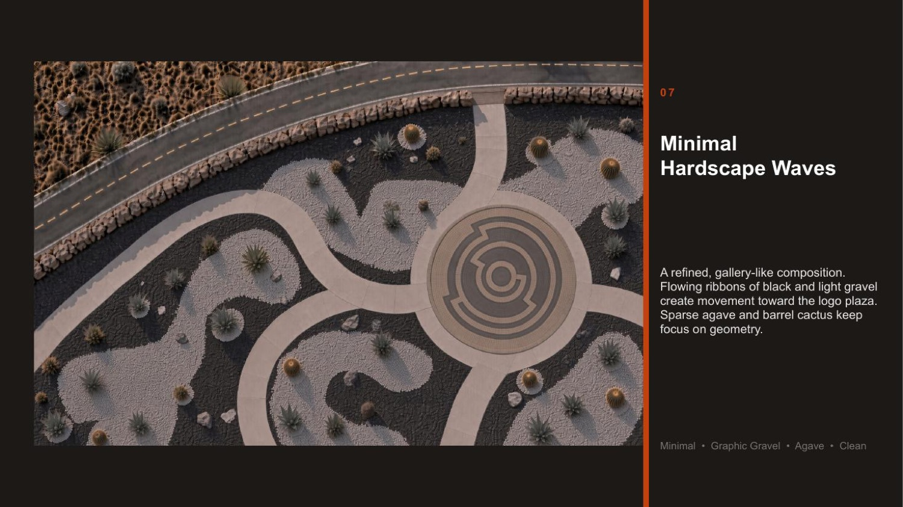
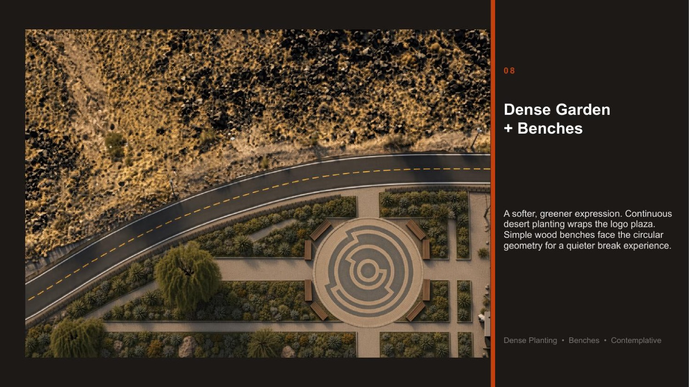
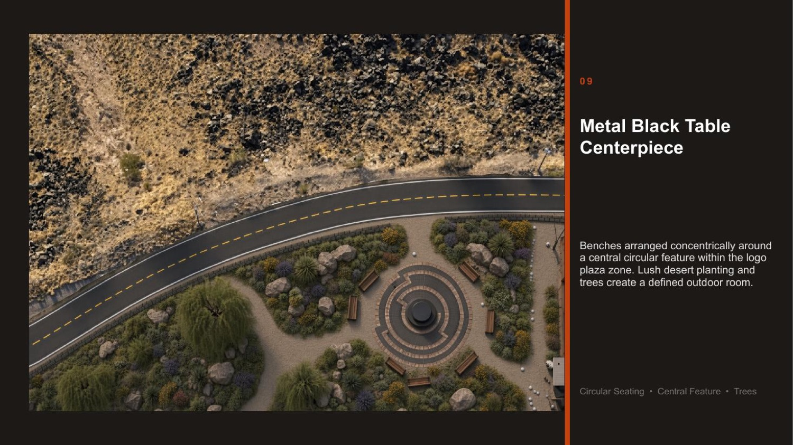
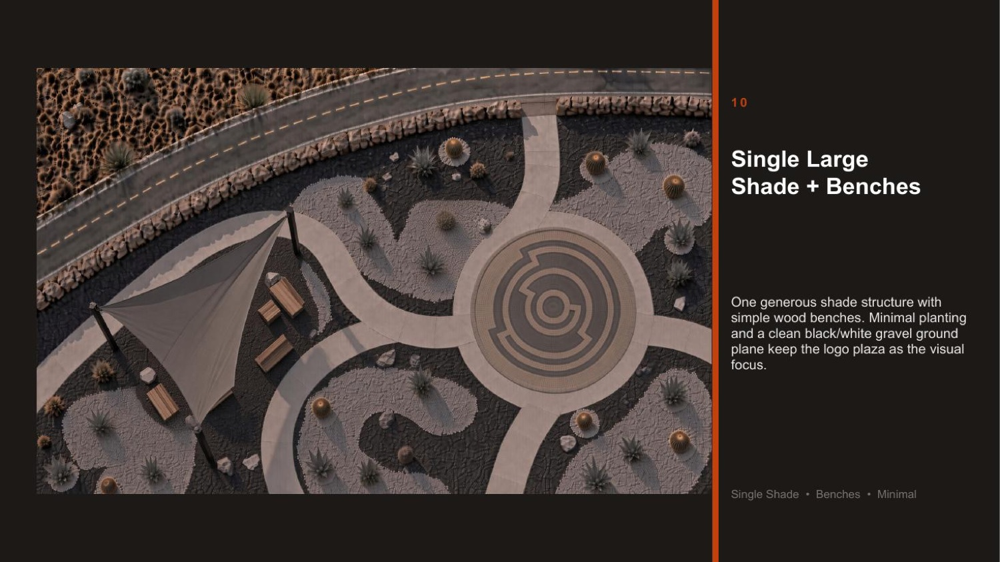
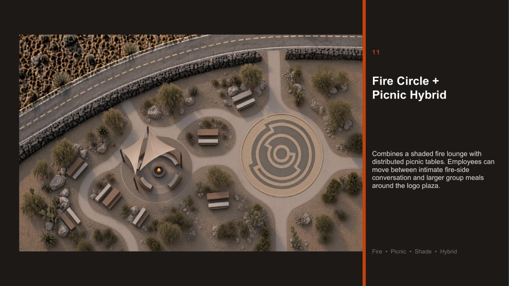
The courtyard tests ideas before the building exists. Shade sails, misters, fire lounges, and the cipher in the ground plane get tested on the current campus first, and what the team actually uses becomes evidence for the permanent version.
Site
Land and structures
- The stepped view edge. Why and how: the whole View page.
- A bridge between the two buildings in phase two, in the spirit of the elevated park at Salesforce in San Francisco. Why: two buildings with a courtyard want a way to be one campus.
- A deliberate water feature, not a detention pond. Why: water reads as luxury in a desert precisely because it is chosen, not required.
- Mass timber or a hybrid structure. Why: warmth, character, and a material story worth pricing against steel and concrete.
- A parking structure designed for future conversion to office or residential, if a garage happens at all. Why: taller floors and an adaptable frame cost more now and keep the land useful for fifty years.
- Solar as shade: photovoltaic canopies doing the shading the facades need anyway. Why: the sun load on the south face is also among the strongest solar resources in the United States.